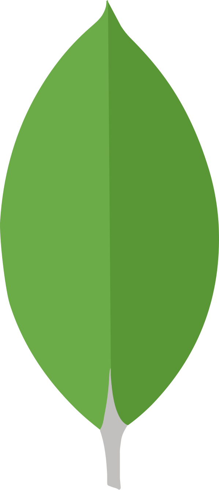
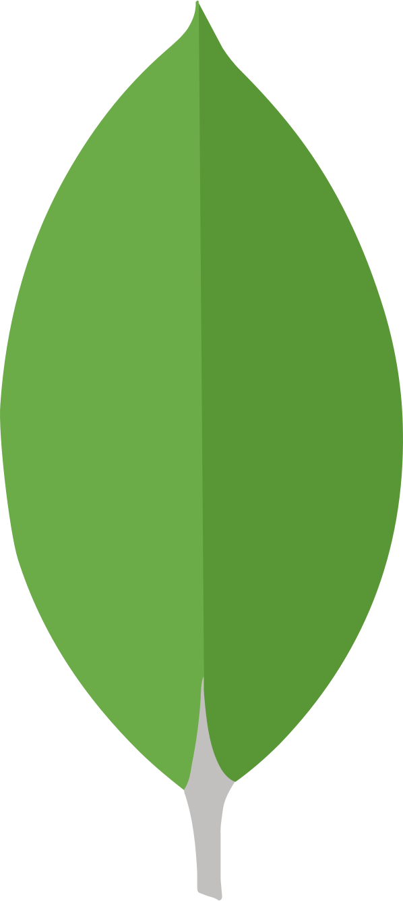

Introduction
Summary
myFlix is a web-app and acts as a library for movies. Users have access to the stored movies and can access movie related information, such as information on the director, the genre and the movie itself. Moreover, users are able to create an account, update their personal data and create a list of favorite movies.
Objective
The goal of this project was to create a full-stack project that I can add to my software portfolio. Therefore, the problem I wanted I solve was to build the entire front-end and back-end on my own.


 
